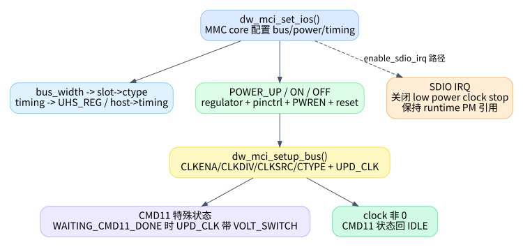

05. 时钟、电源、CMD11 与 SDIO IRQ
这一篇讲不直接属于 request 的路径，但它们会影响 request
状态机：set_ios()、setup_bus()、信号电压切换、SDIO
IRQ、runtime PM。很多“状态机为什么卡住”的问题，其实根在
clock/power/low-power mode。

1.
dw_mci_set_ios() 是 MMC core 配置硬件状态的主入口
dw_mci_set_ios() 定义在
kernel/drivers/mmc/host/dw_mmc.c:1498，由
mmc_host_ops.set_ios 暴露给 MMC core，ops 表在
kernel/drivers/mmc/host/dw_mmc.c:1888。
它按顺序处理：
| 内容 | 代码位置 | 说明 |
|---|---|---|
| bus width | kernel/drivers/mmc/host/dw_mmc.c:1505 |
根据 1/4/8-bit 设置 slot->ctype |
| timing/DDR | kernel/drivers/mmc/host/dw_mmc.c:1517 |
修改 UHS_REG DDR bit，保存
host->timing |
| clock mirror | kernel/drivers/mmc/host/dw_mmc.c:1530 |
slot->clock = ios->clock，避免 core 更新竞态 |
| 平台 set_ios hook | kernel/drivers/mmc/host/dw_mmc.c:1536 |
SoC 私有配置入口 |
| power mode | kernel/drivers/mmc/host/dw_mmc.c:1539 |
POWER_UP/ON/OFF 分别处理
regulator、pinctrl、reset、clock |
| CMD11 收尾状态 | kernel/drivers/mmc/host/dw_mmc.c:1620 |
WAITING_CMD11_DONE 且 clock 非 0 时回
IDLE |
set_ios() 不是简单设置寄存器。它既处理电源，也处理
pinctrl、reset、clock、timing，还会影响 CMD11 状态机。
2.
dw_mci_setup_bus() 的 clock 更新顺序
dw_mci_setup_bus() 定义在
kernel/drivers/mmc/host/dw_mmc.c:1250。它的核心流程是：
- 如果当前处于
STATE_WAITING_CMD11_DONE，clock update 命令继续带SDMMC_CMD_VOLT_SWITCH，见kernel/drivers/mmc/host/dw_mmc.c:1258。 - clock 为 0 时，关闭
CLKENA并通知 CIU，见kernel/drivers/mmc/host/dw_mmc.c:1264。 - clock 改变或强制初始化时，先 disable clock，再清
CLKSRC，发UPD_CLK。 - 写
CLKDIV，再发UPD_CLK。 - 重新 enable clock，并根据
DW_MMC_CARD_NO_LOW_PWR决定是否开 low power clock stop，见kernel/drivers/mmc/host/dw_mmc.c:1311。 - 更新
slot->__clk_old、mmc->actual_clock、host->current_speed，最后写CTYPE。
这个函数会频繁通过
mci_send_cmd(slot, SDMMC_CMD_UPD_CLK | SDMMC_CMD_PRV_DAT_WAIT, 0)
通知 CIU。它不是普通 MMC 命令路径，不走
mmc_request，但会直接操作控制器命令寄存器。
3. CMD11 为什么跨多个函数
CMD11 的完整链路：
| 阶段 | 代码位置 | 做什么 |
|---|---|---|
| 准备命令 | kernel/drivers/mmc/host/dw_mmc.c:301 |
设置 SDMMC_CMD_VOLT_SWITCH，状态改
STATE_SENDING_CMD11，临时关闭 low power mode |
| 启动命令 | kernel/drivers/mmc/host/dw_mmc.c:1407 |
设置 500ms 级 CMD11 timer |
| IRQ 特判 | kernel/drivers/mmc/host/dw_mmc.c:2951 |
voltage switch interrupt 先处理，避免被当成普通错误 |
| request 收尾 | kernel/drivers/mmc/host/dw_mmc.c:1992 |
从 STATE_SENDING_CMD11 进入
STATE_WAITING_CMD11_DONE |
| clock update | kernel/drivers/mmc/host/dw_mmc.c:1258 |
setup_bus() 继续带 VOLT_SWITCH bit |
| set_ios 收尾 | kernel/drivers/mmc/host/dw_mmc.c:1620 |
clock 非 0 后回 STATE_IDLE |
所以看到 STATE_WAITING_CMD11_DONE 不要误以为 tasklet
在等一个事件。它等的是后续 IOS/clock 流程把电压切换协议走完。
4. SDIO IRQ 与 low power mode
SDIO interrupt 的处理也会改 clock low power
行为。dw_mci_prepare_sdio_irq() 定义在
kernel/drivers/mmc/host/dw_mmc.c:1722。注释说明：低功耗模式会在
idle 时停 card clock，但 SDIO interrupt 需要 clock 工作，所以使能 SDIO
IRQ 时要关闭 low power clock stop。
入口 dw_mci_enable_sdio_irq() 定义在
kernel/drivers/mmc/host/dw_mmc.c:1770，它做三件事：
- 调
dw_mci_prepare_sdio_irq()修改CLKENAlow-power bit。 - 调
__dw_mci_enable_sdio_irq()修改INTMASK中对应 slot 的 SDIO interrupt bit，见kernel/drivers/mmc/host/dw_mmc.c:1751。 - SDIO IRQ 使能时
pm_runtime_get_noresume()，关闭时pm_runtime_put_noidle()，避免设备在需要接收 SDIO interrupt 时 runtime suspend。
主 IRQ 中看到 SDIO interrupt 时，会清中断、临时 disable 对应 SDIO
IRQ，然后 sdio_signal_irq() 通知 core，见
kernel/drivers/mmc/host/dw_mmc.c:3053。core ack 后再通过
.ack_sdio_irq 重新 enable，入口是
dw_mci_ack_sdio_irq()，见
kernel/drivers/mmc/host/dw_mmc.c:1785。
5. reset 与 runtime PM 对状态机的影响
dw_mci_reset() 定义在
kernel/drivers/mmc/host/dw_mmc.c:1817。它会 stop SG
iterator、reset CTRL/FIFO/DMA、清中断、等待 DMA_REQ
消失、必要时重新初始化 IDMAC，并最后发
SDMMC_CMD_UPD_CLK。错误路径里调用 reset
不是“重启整个驱动”，而是把控制器内部 FIFO/DMA/中断状态拉回可控状态。
runtime PM resume 会重新初始化 DMA、reset 控制器、恢复
FIFOTH/TMOUT/INTMASK/CTRL 等，再对 keep-power 场景调用
set_ios() 或强制 setup_bus()。相关代码从
kernel/drivers/mmc/host/dw_mmc.c:3835 开始，其中恢复
clock/bus 的关键调用在
kernel/drivers/mmc/host/dw_mmc.c:3906 和
kernel/drivers/mmc/host/dw_mmc.c:3909。
6. 排查 clock/power 类问题的切入点
如果现象是“命令不完成”或“SDIO IRQ 丢”，不要只看 request 状态机。同步检查：
set_ios()是否把slot->clock设置为预期值。setup_bus()后CLKENA/CLKDIV/CTYPE是否符合预期。- CMD11 后是否停在
STATE_WAITING_CMD11_DONE，以及后续set_ios()是否被调用。 - SDIO IRQ 使能时是否设置
DW_MMC_CARD_NO_LOW_PWR并保持 runtime PM 引用。 - 错误恢复是否 reset 后重新发了
UPD_CLK。